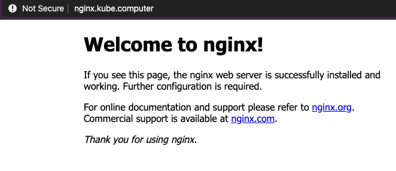

ExternalDNS with Designate
To reduce manual effort and automate the configuration of DNS zones, you may want to use ExternalDNS. In summary, ExternalDNS allows you to control DNS records dynamically with Kubernetes resources in a DNS provider-agnostic way. ExternalDNS is not a DNS server by itself, but merely configures other DNS providers (for example, OpenStack Designate, Amazon Route53, Google Cloud DNS, and so on.)
Prerequisites
To successfully complete the following steps, you need the following:
kubectllatest version- A running Kubernetes cluster created with GKS, with a ready Machine Deployment
- For more information, see Creating a Cluster.
- A valid
kubeconfigfor your cluster- For more information, see Connecting to a Cluster.
- Installed OpenStack CLI tools
- OpenStack API access
- A valid domain
Configuring Your Domain to Use Designate
Delegate your domains from your DNS provider to the following GEC DNS name servers so that Designate can control the DNS resources of your domain.
dns1.ddns.innovo.cloud
dns2.ddns.innovo.cloud
Creating your DNS Zone
Before you use ExternalDNS, you need to add your DNS zones to your DNS provider, in this case, Designate DNS.
In our example we use the test domain name foobar.cloud. It is important to create the zones before starting to control the DNS resources with Kubernetes.
Note: You must include the final
.at the end of the zone/domain to be created.
$ openstack zone create --email webmaster@foobar.cloud foobar.cloud.
+----------------+--------------------------------------+
| Field | Value |
+----------------+--------------------------------------+
| action | CREATE |
| attributes | |
| created_at | 2018-08-15T06:45:24.000000 |
| description | None |
| email | webmaster@foobar.cloud |
| id | 036ae6e6-6318-47e1-920f-be518d845fb5 |
| masters | |
| name | foobar.cloud. |
| pool_id | bb031d0d-b8ca-455a-8963-50ec70fe57cf |
| project_id | 2b62bc8ff48445f394d0318dbd058967 |
| serial | 1534315524 |
| status | PENDING |
| transferred_at | None |
| ttl | 3600 |
| type | PRIMARY |
| updated_at | None |
| version | 1 |
+----------------+--------------------------------------+
Next, make sure that the zone was created successfully.
$ openstack zone list
+--------------------------------------+-----------------------+---------+------------+--------+--------+
| id | name | type | serial | status | action |
+--------------------------------------+-----------------------+---------+------------+--------+--------+
| 036ae6e6-6318-47e1-920f-be518d845fb5 | foobar.cloud. | PRIMARY | 1534315524 | ACTIVE | NONE |
+--------------------------------------+-----------------------+---------+------------+--------+--------+
$ openstack zone show foobar.cloud.
+----------------+--------------------------------------+
| Field | Value |
+----------------+--------------------------------------+
| action | NONE |
| attributes | |
| created_at | 2018-08-15T06:45:24.000000 |
| description | None |
| email | webmaster@foobar.cloud |
| id | 036ae6e6-6318-47e1-920f-be518d845fb5 |
| masters | |
| name | foobar.cloud. |
| pool_id | bb031d0d-b8ca-455a-8963-50ec70fe57cf |
| project_id | 2b62bc8ff48445f394d0318dbd058967 |
| serial | 1534315524 |
| status | ACTIVE |
| transferred_at | None |
| ttl | 3600 |
| type | PRIMARY |
| updated_at | 2018-08-15T06:45:30.000000 |
| version | 2 |
+----------------+--------------------------------------+
Installing ExternalDNS with Helm
Install ExternalDNS to your cluster. In our example we will use Helm as follows:
- Install Helm
$ helm repo add stable https://kubernetes-charts.storage.googleapis.com/$ helm repo update- Create this
values.yamlfile and configure it. For more information, see values-external-dns.
## K8s resources type to be observed for new DNS entries by ExternalDNS
##
sources:
- service
- ingress
## DNS provider where the DNS records will be created. Available providers are:
## - aws, azure, cloudflare, coredns, designate, digitalocoean, google, infoblox, rfc2136, transip
##
provider: designate
## Adjust the interval for DNS updates
##
interval: "1m"
## Registry Type. Available types are: txt, noop
## ref: https://github.com/kubernetes-incubator/external-dns/blob/master/docs/proposal/registry.md
##
registry: "txt"
## TXT Registry Identifier, a name that identifies this instance of External-DNS
## This value should not change, while the cluster exists
##
txtOwnerId: "external-dns"
## Modify how DNS records are sychronized between sources and providers (options: sync, upsert-only )
##
policy: sync
## Configure resource requests and limits
## ref: http://kubernetes.io/docs/user-guide/compute-resources/
##
resources:
limits:
memory: 50Mi
cpu: 10m
requests:
memory: 50Mi
cpu: 10m
## Configure your OS Access
##
extraEnv:
- name: OS_AUTH_URL
value: https://identity.optimist.gec.io/v3
- name: OS_REGION_NAME
value: fra
- name: OS_USERNAME
value: "%YOUR_OPENSTACK_USERNAME%"
- name: OS_PASSWORD
value: "%YOUR_OPENSTACK_PASSWORD%"
- name: OS_PROJECT_NAME
value: "%YOUR_OPENSTACK_PROJECT_NAME%"
- name: OS_USER_DOMAIN_NAME
value: Default
$ kubectl create namespace external-dns$ helm upgrade --install external-dns -f values.yaml stable/external-dns --namespace=external-dns
Running Your Deployment
To test the fully-qualified domain name (FQDN) of the domain, create this example deployment as nginx.yaml:
apiVersion: apps/v1
kind: Deployment
metadata:
name: nginx
spec:
selector:
matchLabels:
app: nginx
template:
metadata:
labels:
app: nginx
spec:
containers:
- image: nginx
name: nginx
ports:
- containerPort: 80
---
apiVersion: v1
kind: Service
metadata:
name: nginx
annotations:
external-dns.alpha.kubernetes.io/hostname: nginx.foobar.cloud
external-dns.alpha.kubernetes.io/ttl: "60"
spec:
selector:
app: nginx
type: LoadBalancer
ports:
- protocol: TCP
port: 80
targetPort: 80
Apply the configuration to your cluster with:
kubectl apply -f nginx.yaml
Confirming the Results
Check your DNS resources in OpenStack. You should see a similar list with the corresponding DNS records.
openstack recordset list foobar.cloud.
Wait a few minutes, and then test the availability over the internet. For example, browse to your website. You should see the following in your browser.

Summary
By completing these steps, you’ve accomplished the following:
- Learned what ExternalDNS is and how to install it
- Configured ExternalDNS with Helm to use Designate
- Created a deployment with NGINX and tested the connectivity
Congratulations! You now know all required steps to control your DNS resources in Kubernetes.